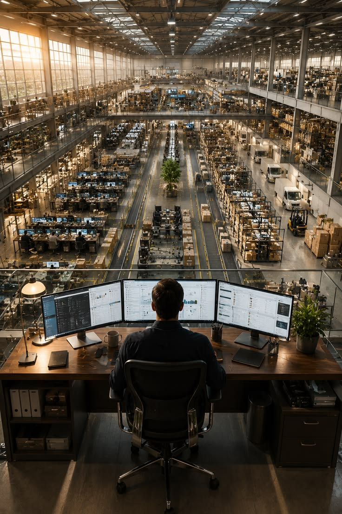
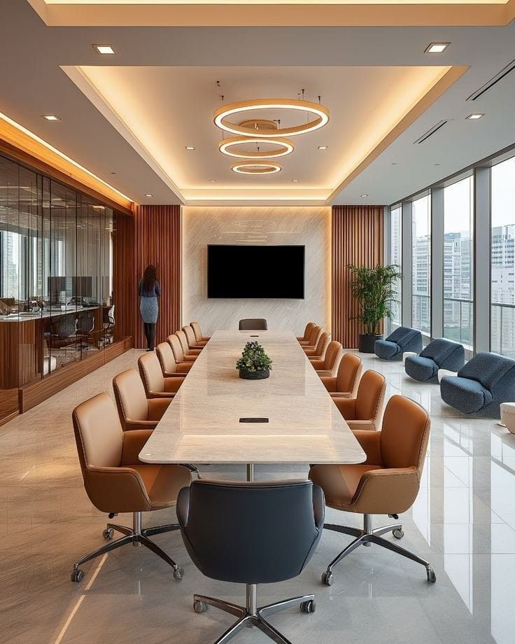
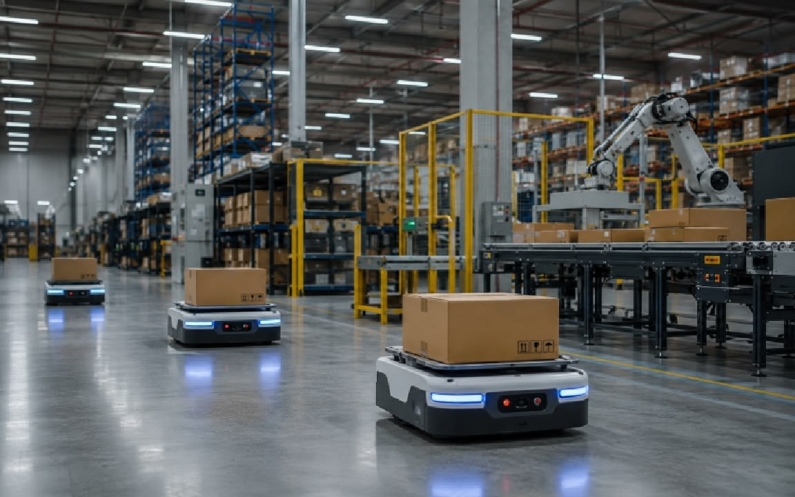

Servicios que ofrecemos
En Muchachos Inteligentes combinamos tecnología de vanguardia
con un compromiso real por nuestra comunidad. No solo acercamos
equipamiento avanzado, sino que impulsamos un modelo tecnológico
responsable, sustentable e inclusivo a través de nuestras tres
líneas principales de trabajo:
Soluciones High-Tech:
Venta, asesoramiento y configuración e integración de
equipos tecnológicos de última generación con soporte personalizado.
Eco-Tech & Reciclaje:
Reacondicionamiento de dispositivos, recolección responsable de residuos
electrónicos y donación de tecnología a instituciones.
Impulso Joven:
Programa de pasantías profesionales, capacitaciones en mantenimiento
técnico y mentorías para promover el talento local.
Infraestructura Tecnológica: El Núcleo de Muchachos Inteligentes
En Muchachos Inteligentes contamos con instalaciones de vanguardia diseñadas
para potenciar el desarrollo tecnológico, la innovación continua y el trabajo
colaborativo. Nuestro espacio combina laboratorios de prueba equipados con
tecnología de última generación, áreas de desarrollo integradas e
infraestructura de alta velocidad que garantizan la máxima eficiencia
y confiabilidad en la creación de nuestras soluciones de alto impacto.

Cutral-Co

Tokio
Nuestra Infraestructura y Comunidad
Contamos con instalaciones de vanguardia
diseñadas para conectar la tecnología de
precisión con el desarrollo de la comunidad. Un espacio
pensado para crear, formar y transformar el entorno local a
través de la innovación sostenible.

Laboratorio de Prototipado y I+D
Instalaciones totalmente equipadas para el
desarrollo, prueba y validación de hardware y
software de última generación.

Espacio Colaborativo y Mentoring
Un punto de encuentro diseñado para impulsar el
trabajo en equipo, capacitaciones técnicas y la
aceleración de proyectos locales.

Centro de Reacondicionamiento Eco-Tech
Infraestructura dedicada a la recolección responsable,
prueba técnica y donación estratégica de tecnología
a la comunidad.
Lo que dicen quienes confían en nosotros
La satisfacción de nuestros clientes y el
impacto en la comunidad son nuestro mejor respaldo.
Conocé las experiencias de quienes ya impulsan sus
proyectos junto a Muchachos Inteligentes.
Es increíble encontrar un equipo que combine
innovación de alto nivel con un compromiso
real con la sustentabilidad y el talento local.
Su programa de reacondicionamiento Eco-Tech y sus
capacitaciones permitieron que nuestra institución
acceda a tecnología de punta. ¡Una iniciativa brillante
para la comunidad!
El nivel de soporte e integración
tecnológica que nos brindaron superó todas
nuestras expectativas. No solo equiparon a
nuestro equipo con hardware de primera línea,
sino que la atención personalizada y la velocidad
de respuesta hicieron toda la diferencia. Muchachos
Inteligentes es sinónimo de eficiencia y vanguardia.